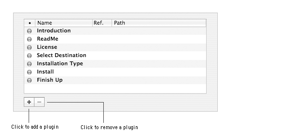

This document describes how you can add steps or panes during the installation process of your project using Installer plugins.
You need to remember that only the Installer plugins of the root component will be visible during the installation.
About Installer Plugins
Installer plugins are Cocoa bundles located in the Contents/Plugins folder of the package or metapackage.
They are loaded by Installer when your package or metapackage is being installed. An Installer plugin will be inserted as a new
step of the installation process. This new step can be completed in one or more panes.
Installer plugins are only supported by Installer on Mac OS X 10.4 and later. The plugins won't be used on earlier versions of the OS or when installing a package with Apple Remote Desktop or the command line tool. So if for instance, you'd like to add a serialization step in your package, you still need to have code in your software to let the user serialize your product.
|
You can create an Installer Plugin with XCode and Interface Builder. You need to know how to code Objective-C and the Cocoa APIs.
|
| 1 | Open XCode. |
| 2 | Choose File > New Project… |
| 3 | Select the Apple Standard Plug-ins > Installer Plugin project template |
| 4 | Click Next. |
| 5 | Type the name of the project in the Project Name text field. |
| 6 | Code your plugin. |
| 7 | Build it. |
Iceberg lets you quickly add, remove or change the display order of an Installer plugin to your project.

To add an Installer plugin:
| 1 | Select the component in the Packages & Metapackages list. | ||
| 2 | Choose View > Plugins. | ||
| 3 | Click the + button. | ||
| 4 | Select the plugins you want to add and click on Add.
|
To remove an Installer plugin:
| 1 | Select the component in the Packages & Metapackages list. |
| 2 | Choose View > Plugins. |
| 3 | Select the pugins to be removed. |
| 4 | Click the - button. |
| 5 | Click Remove. |
To enable or disable an Installer plugin:
| 1 | Select the component in the Packages & Metapackages list. |
| 2 | Choose View > Plugins. |
| 3 | Select the plugin. |
| 4 | Select or unselect the checkbox in the MemberShip (•) column. |
To change the display order of an Installer plugin:
| 1 | Select the component in the Packages & Metapackages list. |
| 2 | Choose View > Plugins. |
| 3 | Select the plugin. |
| 4 | Drag and drop it to the new position. |